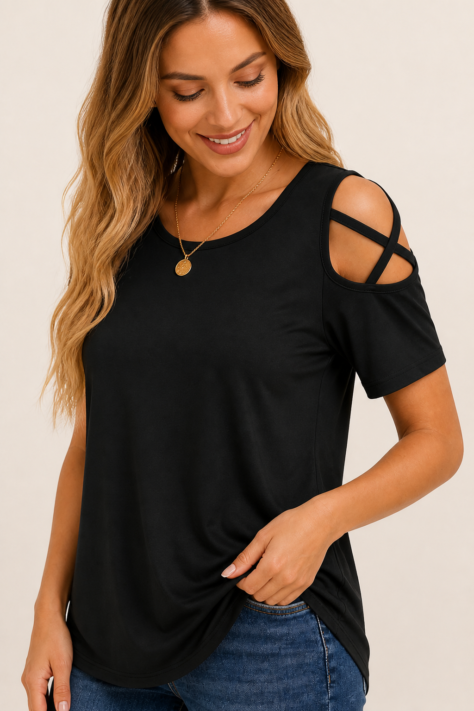
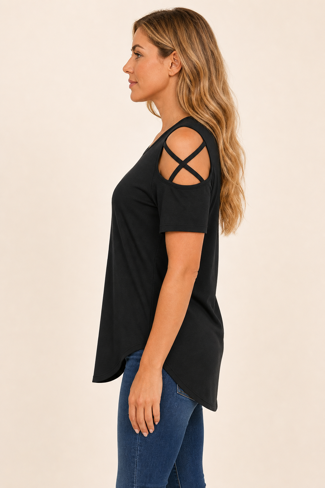
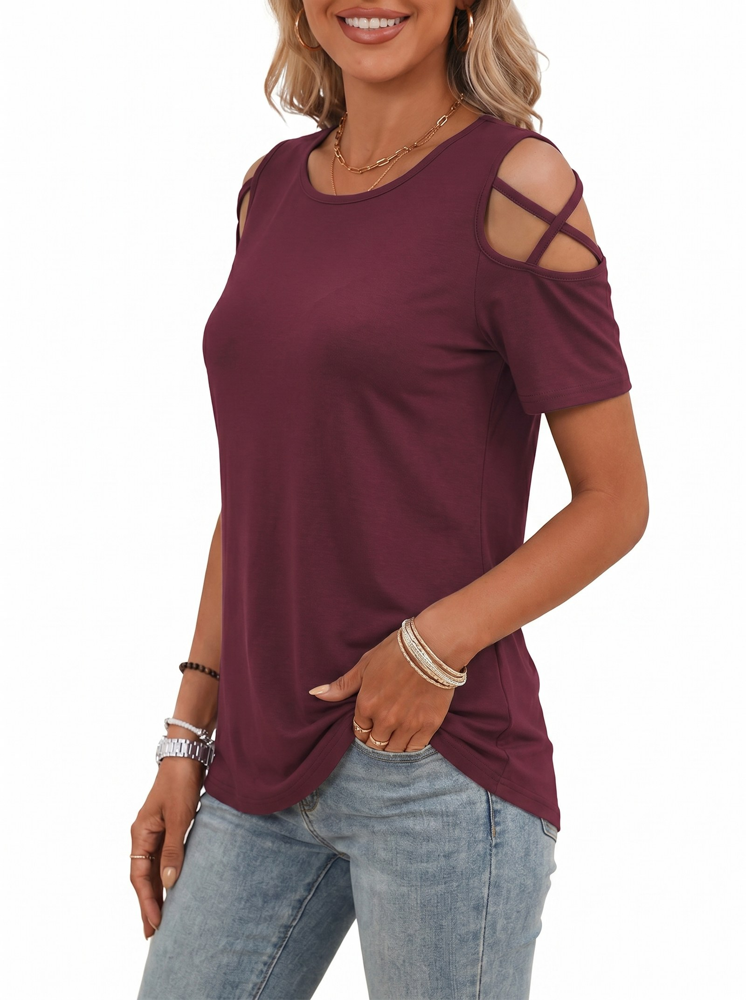

Fabric + Fit
Drape That
Flatters
95% polyester. 5% spandex. Designed to fall softly.
SOFT DRAPEHIGH-LOW HEMEASY MOVEMENT

SOFT DRAPE
SIDE VIEW BACK VIEW
BACK VIEW
FLOW
95% polyester. 5% spandex. Designed to fall softly.

SOFT DRAPE
SIDE VIEWBACK VIEW